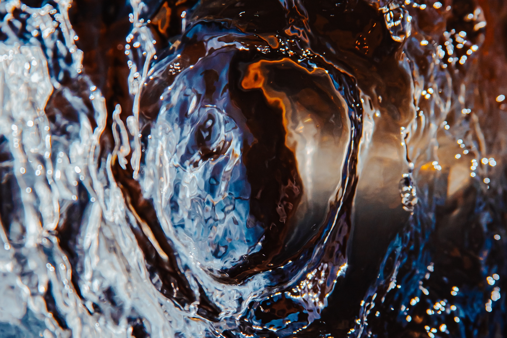
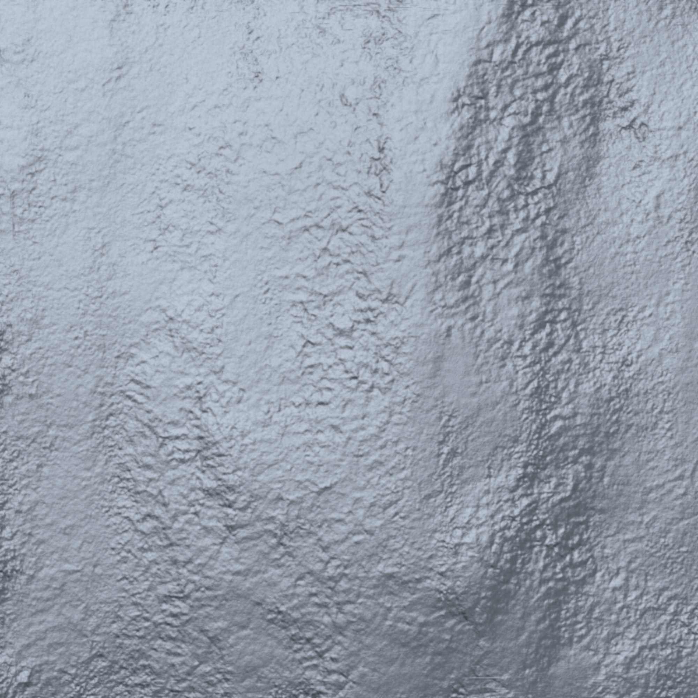
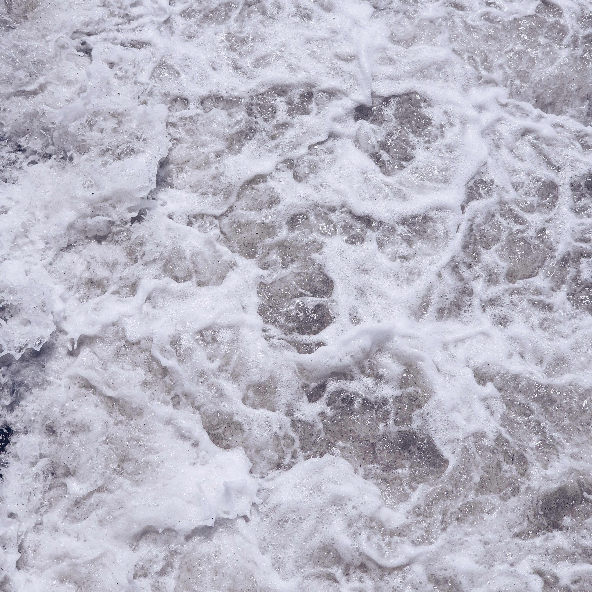
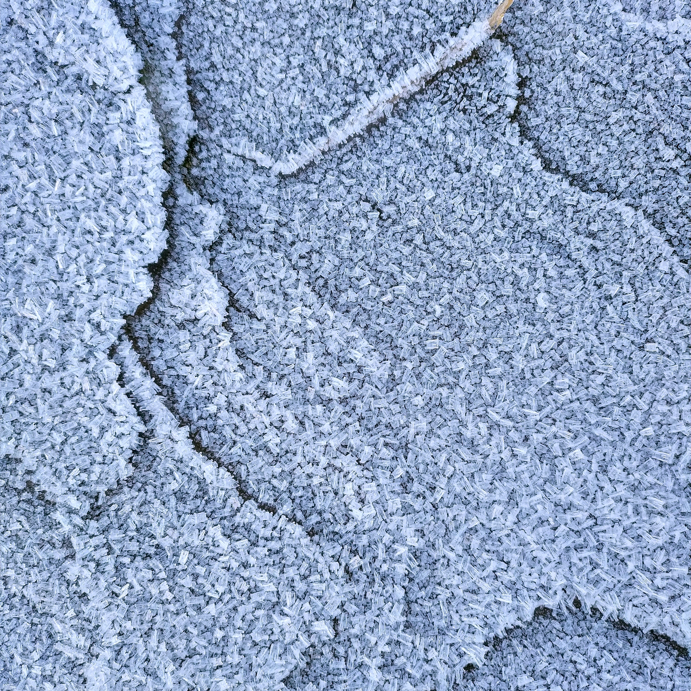

Sometimes people have additional questions
If the forms of this world die, which is more real: the me that dies or the me that's infinite? Can I trust my habitual mind or do I need to learn to look beneath those things?

Here are some beige cubes

there is no such thing as nothing

everything is the same, even if it's different

there is no remainder in the mathematics of infinity

if this world is temporary, identity is an illusion
Nobody sits like this rock sits. You rock, rock. The rock just sits and is. You show us how to just sit here and that's what we need.
-Albert Markovski
What are you doing tomorrow?
I was thinking about chaining myself to a bulldozer. Do you want to come?